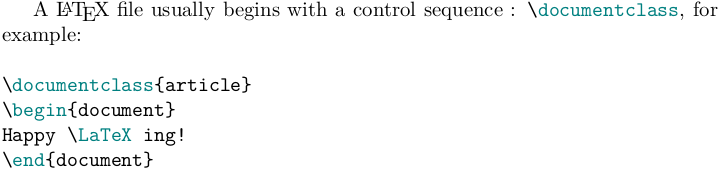
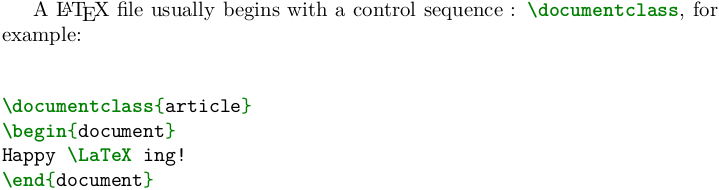

在使用 LATEX 编译的一些文档中，为了使代码抄录能够更加醒目易读，很多作者会采用特殊代码环境来进行排版。常用的代码抄录环境有 listings 宏包提供的 lstlisting 环境和 minted 宏包提供的 minted 环境。后者虽然有精美的预设计，但需要系统安装配置好 Python 的 pygments 模块，并开启 --shell-escape 环境进行编译，这样，使用了 minted 环境的代码在移植到其他未安装 Python 及 pygements 模块的系统内则无法编译成功。本文给出一种方法，可以根据 --shell-escape 编译参数的使用情况，选择采用不同的代码抄录环境来排版代码。
基本原理
实现的原理非常简单，TeX 各种引擎的编译参数 --shell-escape 会传递给一个控制序列 \shellescape，使用了参数时，则该控制序列为 1，这样，我们就可以通过：
1
2
3
4
5
| \ifnum\shellescape=1
...
\else
....
\fi
|
的结构来选择代码抄录的环境。对于使用 minted 宏包时，我们可以用
1
2
| \newminted{<language>}{<option>}
\newmintinline{<language>}{<option>}
|
来定义行间抄录环境 <language>code 和行内抄录命令 \<language>inline（详细内容可参见 minted 宏包的使用手册）。同时，可以使用：
1
2
3
| \newcommand{\<language>inline}[1]{\lstinline|#1|}
\lstnewenvironment{<language>code}{<starting code>}{<ending code>}
\lstset{<lst options>}
|
来定义同名的 <language>code 行间抄录环境和行内抄录命令 \<language>inline。
当然，这里所有 <> 包裹的内容需要根据需要自行定义。
代码实现
以下，我们用一个最简单的 MWE 来给出一个排版 LATEX 代码的例子：
1
2
3
4
5
6
7
8
9
10
11
12
13
14
15
16
17
18
19
20
21
22
23
24
25
26
27
28
29
30
31
32
33
34
35
36
37
38
39
40
41
| \documentclass{article}
\usepackage{xparse}
\usepackage{xcolor}
\ifnum\shellescape=1
\usepackage{minted}
\newminted{latex}{breaklines}
\newmintinline{latex}{}
\else
\usepackage{listings}
\lstset{
language={[LaTeX]TeX},
breaklines,
basicstyle=\ttfamily,
tabsize=2,
columns=flexible,
lineskip=0pt,
aboveskip=0pt,
belowskip=0pt,
commentstyle=\color{olive}\itshape,
keywordstyle = {[1]\color{teal}},
keywordstyle = {[2]\color{red}},
keywordstyle = {[3]\color{violet}},
keywordstyle = {[4]\color{blue}},
}
\lstnewenvironment{latexcode}{}{}
\NewDocumentCommand\latexinline{v}{\lstinline|#1|}
\fi
\begin{document}
A \LaTeX{} file usually begins with a control sequence :
\latexinline{\documentclass}, for example:
\bigskip
\begin{latexcode}
\documentclass{article}
\begin{document}
Happy \LaTeX ing!
\end{document}
\end{latexcode}
\end{document}
|
不带 --shell-escape 选项编译效果

带 --shell-escape 选项编译效果
